This tool is used for simulating interiors and reflection with a Cubemap. We baked static object into a cubemap to simulate interiors and reflection. Compared to realtime interiors/reflection rendering, we will get a low overhead and high quality inteirors/reflection effect.
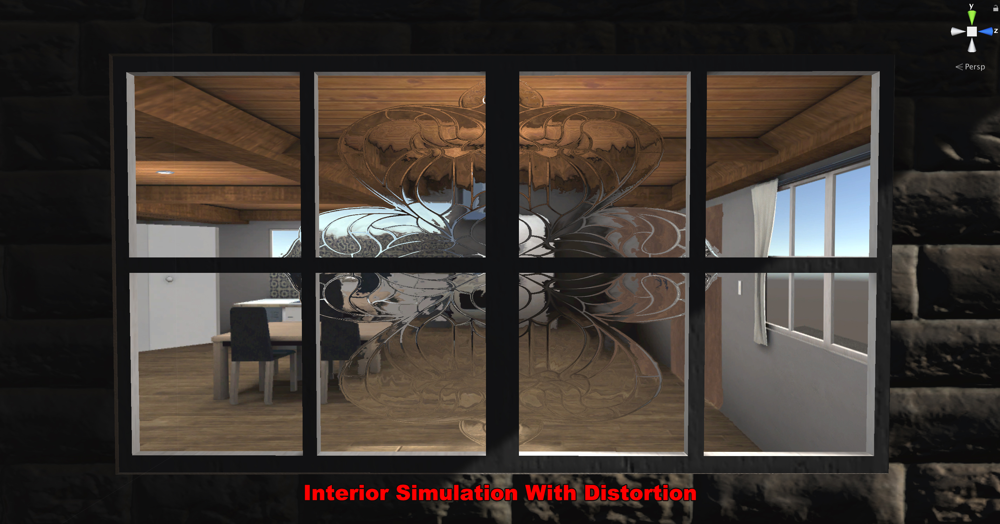 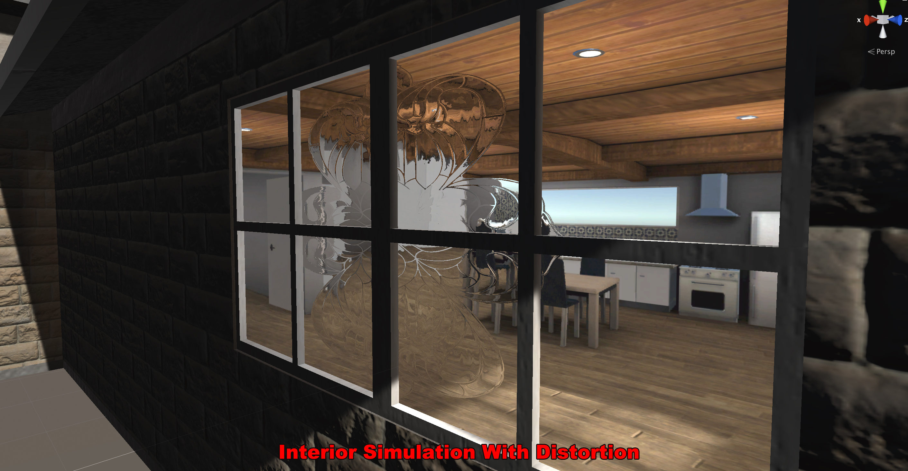 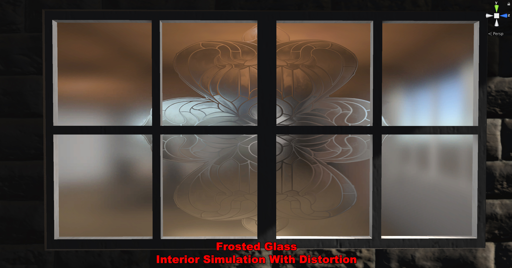
In this demo scene, there is an empty house, we use this tool to simulate a fake interior. As you can see, It's almost real. You can't see any artificiality even if you're close enough. We also add distortion and frosted glass effect to windows.
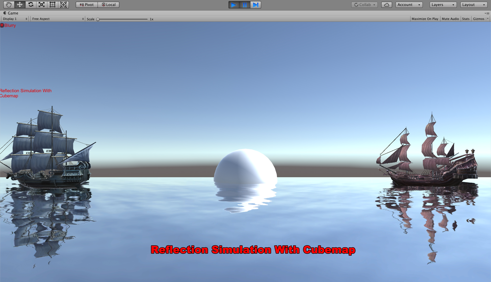
In thie demo scene, we use this tool to simulate reflection of water.
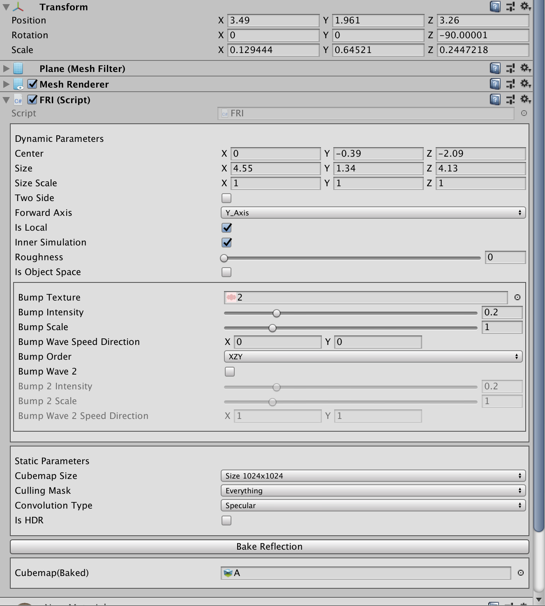
Center, Size, Size Scale
These parameters are used to control size of yellow box. Different sizes of yellow boxes will give different results.
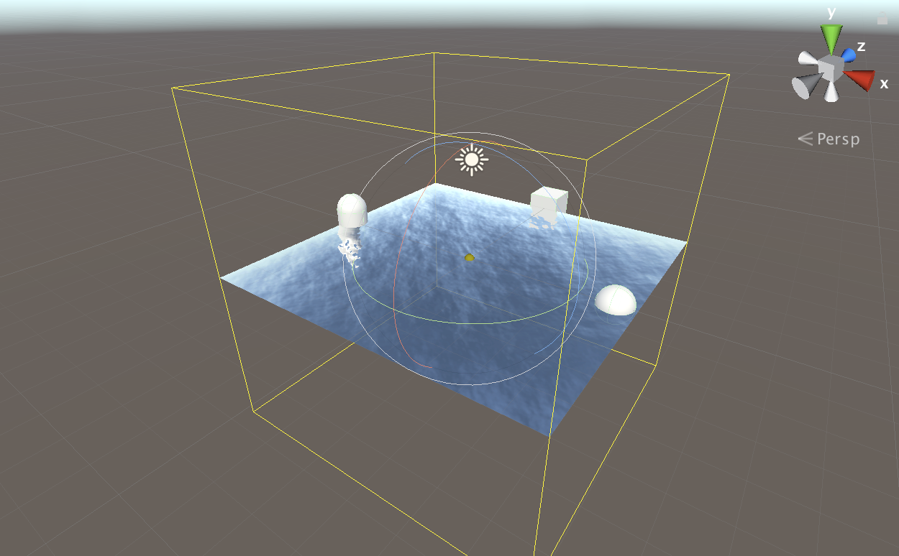
Two Side
Cull Back or Cull Off
Forward Asix
The forward axis in object's coordinate space
Is Local
Normal Cubemap mode or Local Cubemap mode
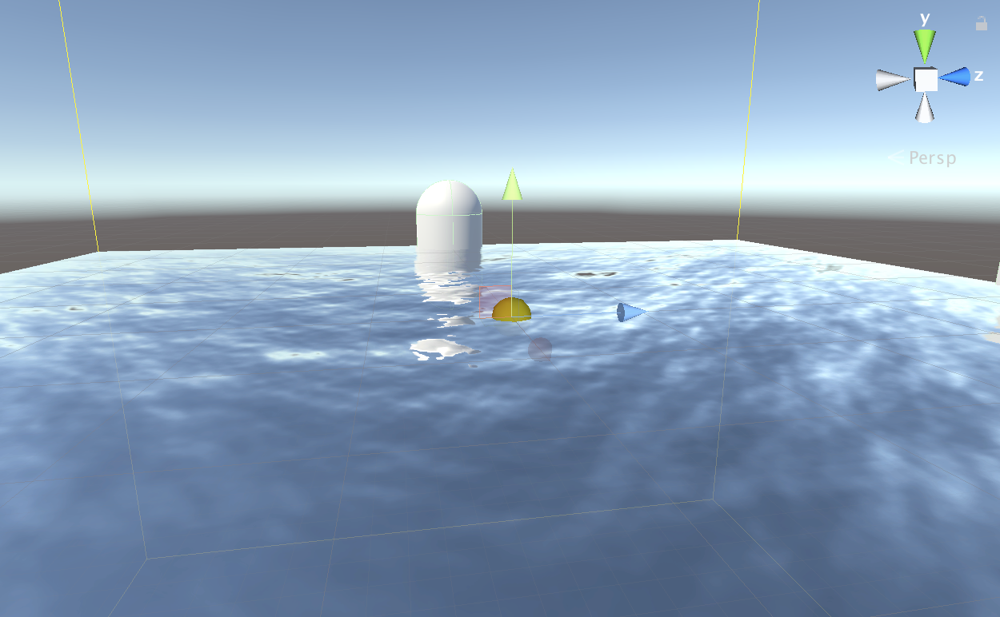 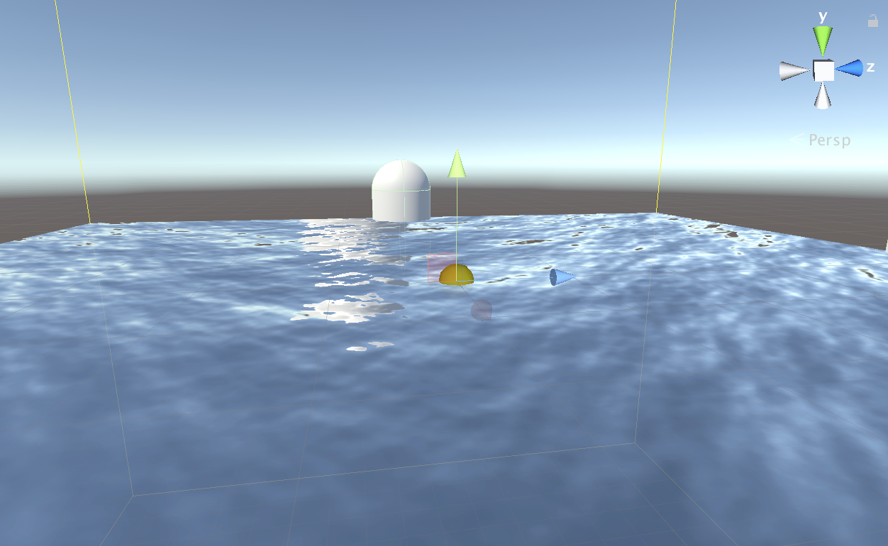
Inner Simulateion
Reflection mode or Interior mode
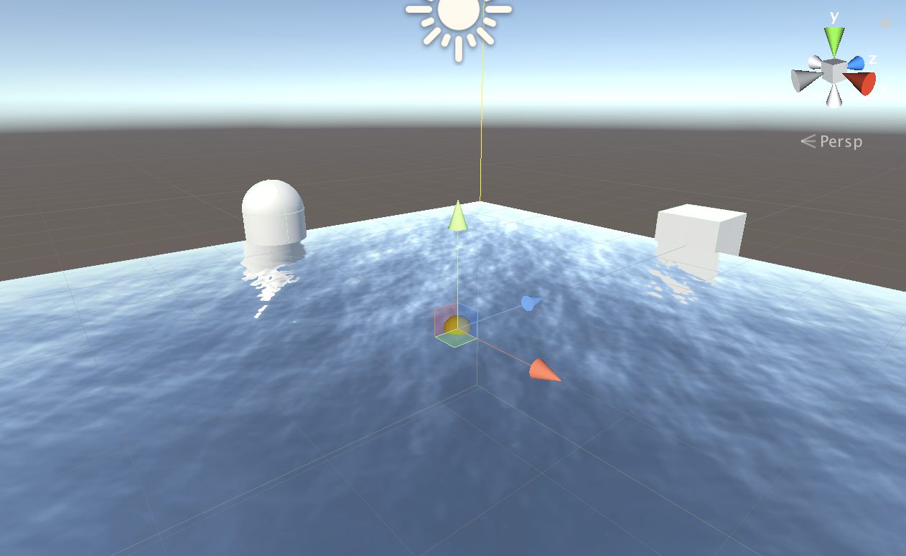 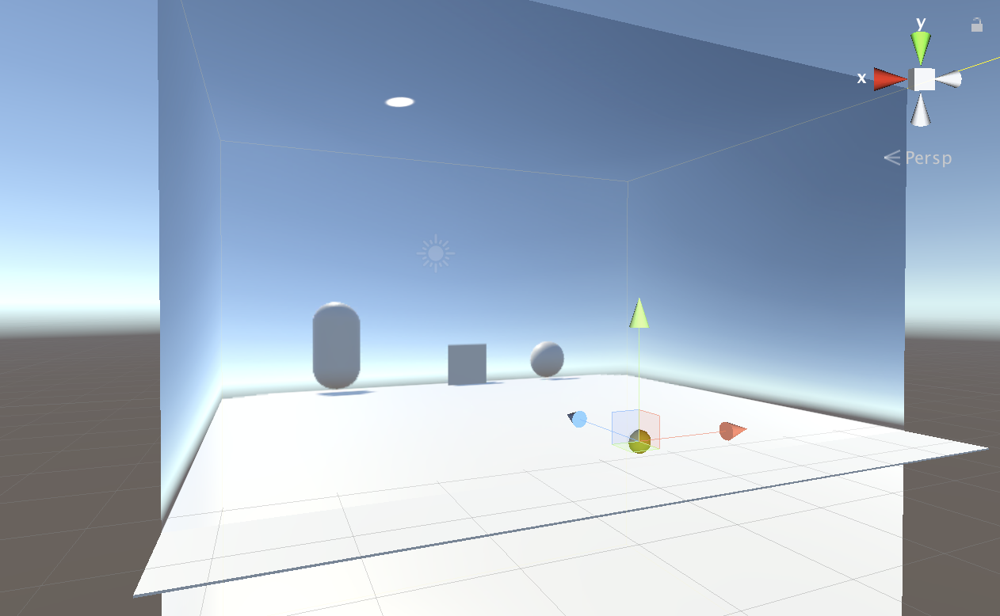
Roughness
Roughness of surface
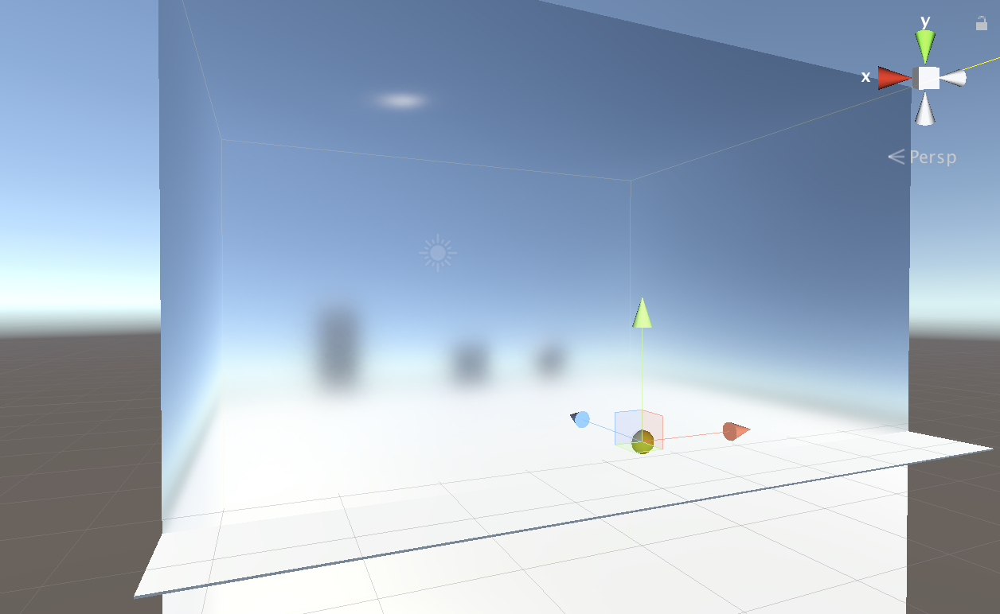
Is Object Space
Calculate fake reflection and interior in world space or object space
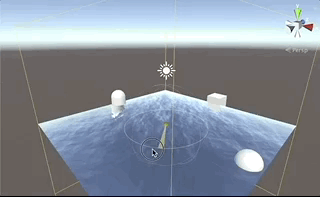 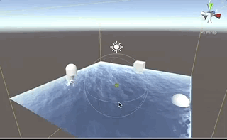
Bump Texture, Bump Intensity, Bump Scale, Bump ...
Add waves to surface
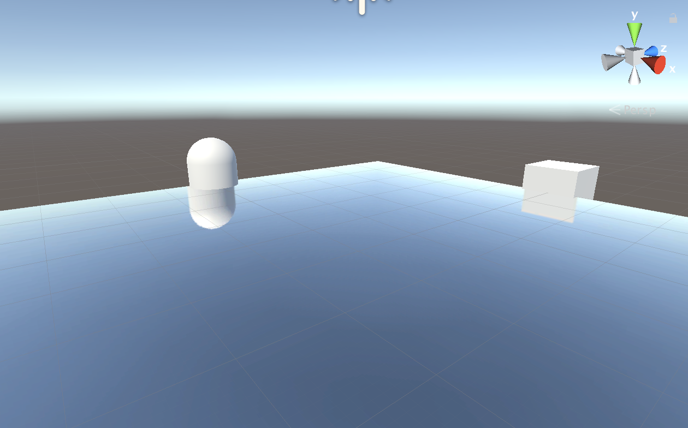 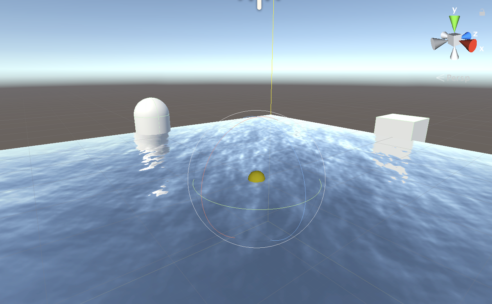
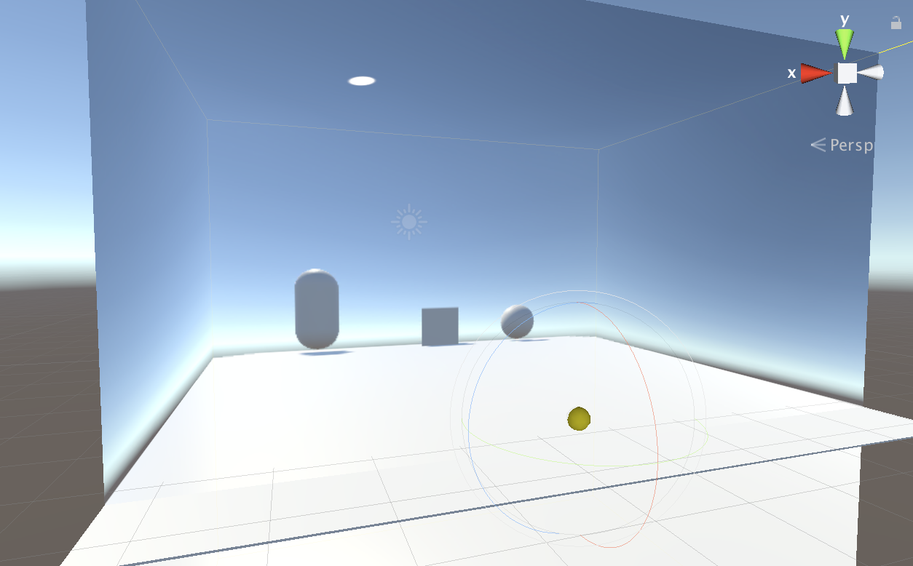 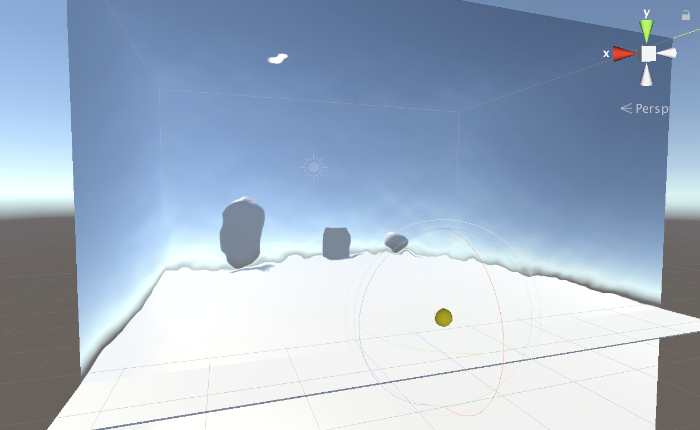